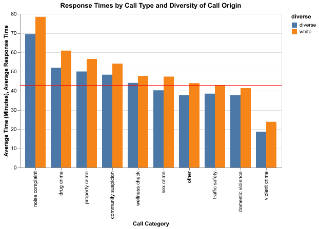
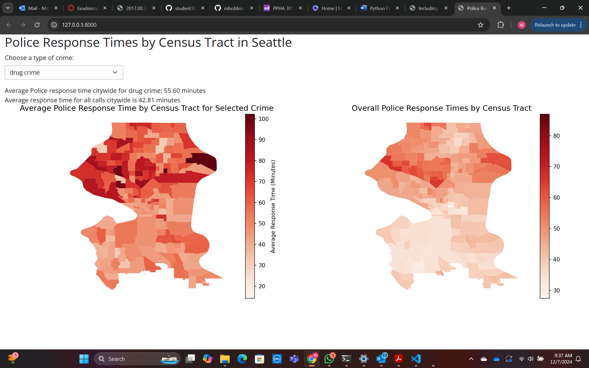
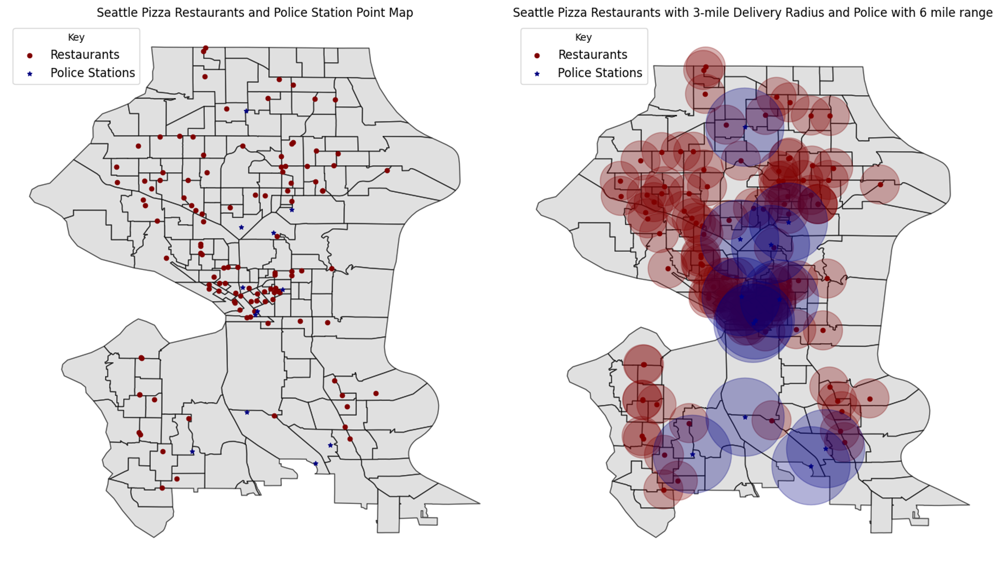

Final Project - Police Versus Pizza Response Times
initial data testing
Data Structure
5,926,156 unique calls (rows) 13 colums for each observation
Event Clearance Description appears to indicate what an officer did to resolve a phone call.
Call Type is nominal but unclear what the dispositions are for some. Priority is a quantitative variable from 1-9. has 712 nas also.
Initial Call Type is very messy and we could recode. lots of different dispositions that we could aggregate into common categories. Same with Final Call Type. 326 and 436 respectively unique values.
West, Southwest, East, South, North, and Unknown are the only values for Precinct. There’s 52,381 Unknown entries - not a lot.
Sector has a number of values that seem to be names? Need to investigate what this means if a data dictionary is handy.
Quite a few beats also.
testing date-time range
initial data clean up
creating new data - time differences
checking general average response time
checking by call type
average response time by location
Final Chart shows that B1, B2, B3, U3, J2, J3, J1, N2, D3, U1, Q2, N3, Q1,U2, C2, D2, L3, L2 all perform worse on response time than the average.
average response time by call type
grouping initial call type for 911 calls
There are 249 unique values for this. It would be nice if we could group in a way that provides some clarity about what kind of calls are receiving fast response and which ones are not. Then we can evaluate if its proportionate to the crime, and we could provide granularity. Maybe even use to filter a map on a dashboard by the response times based upon our new call types
Transposing over geographic data
create bones for shiny app:
number of observations by census tract
NLP Extra Credit - Name-based Analysis
Since our dataset from the city of Seattle on food-based businesses does not come with any kind of attribution for these venues, we will be using Natural Language Processing to isolate the food venues likely to serve pizzas.
Geo-locating pizza venues and mapping response windows
Per our research, the average restaurant delivery time is 28.18 minutes for this type of food (https://doi.org/10.1016/j.trip.2023.100891). In the city of Seattle specifically, delivery drivers indicate that their average range driving for a delivery is 5 miles (https://www.ridesharingforum.com/t/comparing-ubereats-doordash-and-postmates-in-seattle-wa/292). This finding is fairly comparable to other data from similar cities like Atlanta, GA (https://opposite-lock.com/topic/5441/the-data-of-driving-for-doordash)
building our delivery range/police precinct ranges
buffer area calulcations
Write-Up
Research Question
Our research question was whether or not police response times are truly slower than pizza delivery times, as the old American social trope suggests. We also sought to evaluate if the recovered response times are reasonable and explore what that discrepancy could mean to policymakers.
Approach/Methodology
We acquired a large dataset on police call responses from the Vera Institute of Justice, and chose to focus on one of their sample cities, Seattle. The initial Seattle dataset contained approximately 5 million observations, with each observation one call placed to the police, the initial purpose, time, and resolution. Our analysis narrowed in on approximately 2 million observations by focusing on just 911 calls as these are emergencies which would require the swift action we wished to observe. Other observations in the data included non-emergency police contact, and officers that were already on-site to respond to a crime. These aren’t as relevant as 911 calls because they either are self-selected by the public as being non-emergencies or are a result of the effectiveness of police patrols respectively. The main variables we focused on are the response time in minutes, the initial call disposition, latitude, and longitude.
We then were able to use census tract data to identify from which census tract a call originated via spatial merge. We used this to group by census tract and align relevant demographic information from each tract. Initially, we explored on too granular a level with our analysis to find any discernable differences among different census tracts and response times. However, after reviewing the census summary data and noting that Seattle has a far greater proportion of the city identifying as White, we concluded that bifurcating the data along the intracity average ‘whiteness’ could serve as a comparison of areas that are whiter than average vs more diverse than average in terms of police response times.
We also used Seattle food-based business license data to evaluate the distribution of pizza restaurants in the city, creating that dataset by using NLP to filter & identify Italian restaurants by training Spacy on Italian names & restaurant naming styles. We geolocated the listed business addresses and joined these locations with the existing police precinct locations to create a buffered plot that shows the potential delivery area coverage of pizza restaurants throughout the city and of the police precincts. We had some difficulty converting the data to the appropriate CRS at one point so that we could plot the desired 3-mile radius around pizza restaurants and 6 miles around police stations, so approximations for the relevant units (decimal degrees) had to be used.
Plots



Policy Implications
Our findings helped show a link between slower response times and police precinct placement in Seattle. Additionally, we found that more diverse neighborhoods had faster response times. Through comparison with pizza restaurants, we sought to show that emergency police response times generally are too slow. Policymakers should think carefully about precinct placement throughout municipalities to minimize these differences and reduce police response times. An additional policy implication from these results is that emergency response is hampered by calls to police that do not necessarily require an emergency response, policymakers could also consider public awareness campaigns so residents are more aware of other city services that can address road safety concerns, downed trees, etc., concerns that are currently handled by police.
Future Work
One of the key findings that we had was that the police response time lags significantly depending on the type of call they believe they are responding to, however our data also indicates that the initial call characterization and the final report given by the responding officer often differ, and in many cases differ in matters of life & death. There were cases where, for example, a call was initially labeled as a noise complaint, but the final report indicated that it was a case of domestic violence. Given that the latter type of incident can be fatal, further research should explore the frequency of this consequential change.